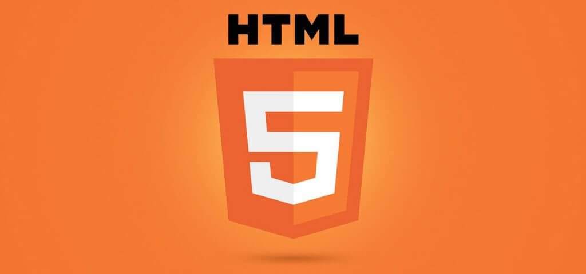

لورم ایپسوم
لورم ایپسوم متن ساختگی با تولید سادگی نامفهوم از صنعت چاپ، و با استفاده از طراحان گرافیک است، چاپگرها و متون بلکه روزنامه و مجله در ستون و سطرآنچنان که لازم است، و برای شرایط فعلی تکنولوژی مورد نیاز، و کاربردهای متنوع با هدف بهبود ابزارهای کاربردی می باشد

HTML 5
زبان نشانهگذاری ابرمتنی یا زنگام یا اچتیامال، HTML یا HyperText Markup Language در کنار سیاساس هستهٔ فناوری ساخت صفحههای وب هستند. اچتیامال زبان توصیف ساختار صفحههای وب است. زبانیاست برای نشانهگذاری ابرمتن که برای تدوین قالب و طراحی صفحههای وب به کار میبرند.
CSS 3
شیوهنامه آبشاری با کوتهنوشت Css یک زبان برای ساخت شیوهنامه است که از آن برای توصیف نمایش یک سند استفاده میشود. Css یکی از فنآوری های بنیادین در وب جهانگستر است. سیاساس روشی ساده برای نمایش چیدمان و جلوههای تصویری بر صفحههای وب است.
Java Script
جاوااسکریپت با کوتهنوشت JS نوعی زبان برنامهنویسی است که با ویژگیهای ارائه شده در مشخصات اکما اسکریپت مطابق میباشد. جاوااسکریپت نوعی زبان سطح بالا، کامپایل درجا، و چندالگویی است. جاوااسکریپت نحو آکولادی دارد، نوع دهی آن پویا است، و دارای توابع کلاس اول میباشد.

Sass
sass مخفف واژه زبان سبک آبشاری است که پیش پردازنده آن CSS با متغیرها، حلقهها و بسیاری از امکانات دیگر که شیوه نامه آبشاری که به تنهایی توانایی انجام آنرا ندارد را دارا میباشد، ساده ایجاد CSS و نگهداری از بزرگ شیوه نامههای سادهتر ساخته شدهاند.
Bootstrap
Bootstrap مجموعهای برای ساخت ظاهری وب سایتها و برنامههای وب است. و یکی از محبوبترین فریم ورکهای css میباشد که از شیوه گرید بندی برای چیدمان صفحات وب استفاده میکند.
php
php یک زبان برنامهنویسیِ شیءگرا است که برای طراحی وب توسعه یافتهاست، اما میتوان از آن به عنوان یک زبان عمومی نیز استفادهکرد. تا ژانویهٔ سال ۲۰۱۳ میلادی PHP روی ۲۴۴ میلیون وبگاه و ۲٫۱ میلیون سرور وب نصب شدهاست.
بازدید
143
پسند
109
مهارت ها
3
پروژه های انجام شده
5